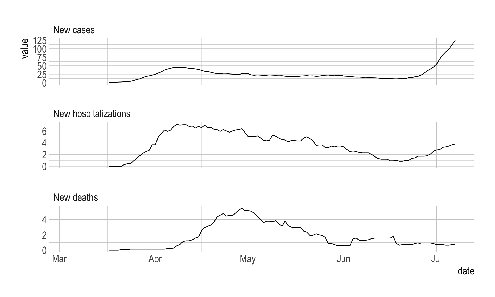
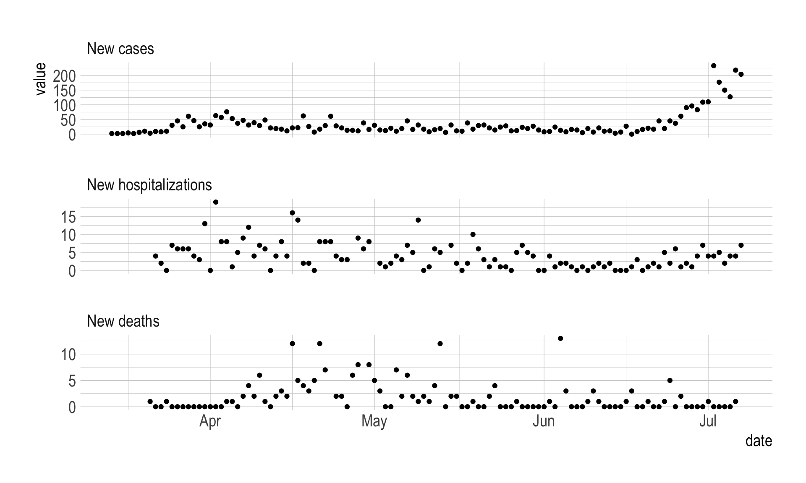
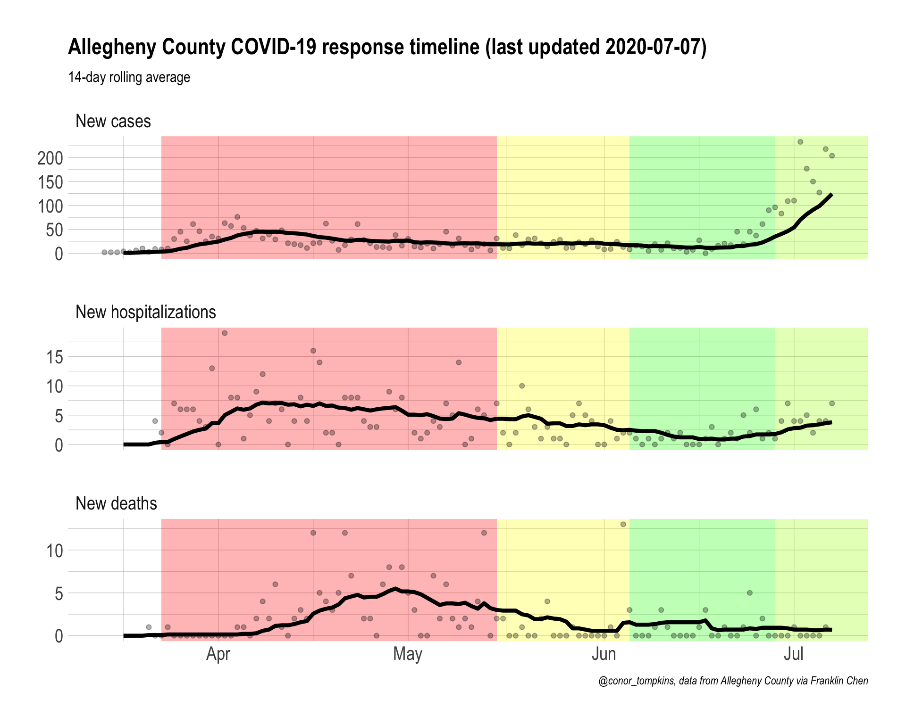

#load libraries
library(tidyverse)
library(lubridate)
library(tidyquant)
library(hrbrthemes)
#settings
theme_set(theme_ipsum(base_size = 15, strip_text_size = 15, axis_title_size = 15))
options(scipen = 999, digits = 4)In this post, I review the process I use to make daily graphs from data published by the Allegheny County Health Department. I use the data posted by Franklin Chen, who scrapes the data from the County’s email updates.
First, load the required packages and set up the environment.
This reads in the raw data from the GitHub repository.
#read in data
df <- read_csv("https://raw.githubusercontent.com/FranklinChen/covid-19-allegheny-county/master/covid-19-allegheny-county.csv") %>%
mutate(state = "Pennsylvania",
county = "Allegheny County") %>%
filter(date < "2020-07-08")
glimpse(df)On July 7th, the County added deaths that occurred between April and June, but marked them as reported on July 7th. For the purposes of visualization, I remove those deaths.
#remove deaths from July 7th
#The deaths reported today are from the state’s use of the Electronic Data Reporting System (EDRS) and include #deaths from April 5 – June 13, all decedents were 65 or older.
#https://twitter.com/HealthAllegheny/status/1280517051589722117?s=20
df <- df %>%
mutate(deaths = case_when(date == "2020-07-07" ~ NA_real_,
date != "2020-07-07" ~ deaths))This calculates new cases, hospitalizations, and deaths.
df <- df %>%
mutate(cases_new = cases - lag(cases),
hospitalizations_new = hospitalizations - lag(hospitalizations),
deaths_new = deaths - lag(deaths))There are instances where the number of cumulative hospitalizations or deaths decreases.
df %>%
mutate(hospitalizations_lag = lag(hospitalizations)) %>%
select(date, date, hospitalizations, hospitalizations_lag, hospitalizations_new) %>%
filter(hospitalizations_new < 0)# A tibble: 3 × 4
date hospitalizations hospitalizations_lag hospitalizations_new
<date> <dbl> <dbl> <dbl>
1 2020-04-27 213 214 -1
2 2020-05-01 235 236 -1
3 2020-05-14 283 285 -2df %>%
mutate(deaths_lag = lag(deaths)) %>%
select(date, date, deaths, deaths_lag, deaths_new) %>%
filter(deaths_new < 0)# A tibble: 2 × 4
date deaths deaths_lag deaths_new
<date> <dbl> <dbl> <dbl>
1 2020-04-23 69 74 -5
2 2020-04-29 86 87 -1In these cases, I remove the values and do not replace them.
#when new cases/hospitalizations/deaths is negative, replace with NA
df <- df %>%
mutate(cases_new = case_when(cases_new < 0 ~ NA_real_,
cases_new >= 0 ~ cases_new),
hospitalizations_new = case_when(hospitalizations_new < 0 ~ NA_real_,
hospitalizations_new >= 0 ~ hospitalizations_new),
deaths_new = case_when(deaths_new < 0 ~ NA_real_,
deaths_new >= 0 ~ deaths_new))This calculates rolling 14-day averages for new cases/hospitalizations/deaths.
#calculate rolling 14 day averages for cases/hospitalizations/deaths
df <- df %>%
tq_mutate(
# tq_mutate args
select = cases_new,
mutate_fun = rollapply,
# rollapply args
width = 14,
align = "right",
FUN = mean,
# mean args
na.rm = TRUE,
# tq_mutate args
col_rename = "cases_new_rolling_14"
) %>%
tq_mutate(
# tq_mutate args
select = hospitalizations_new,
mutate_fun = rollapply,
# rollapply args
width = 14,
align = "right",
FUN = mean,
# mean args
na.rm = TRUE,
# tq_mutate args
col_rename = "hospitalizations_new_rolling_14"
) %>%
tq_mutate(
# tq_mutate args
select = deaths_new,
mutate_fun = rollapply,
# rollapply args
width = 14,
align = "right",
FUN = mean,
# mean args
na.rm = TRUE,
# tq_mutate args
col_rename = "deaths_new_rolling_14"
) %>%
select(state, county, date, contains("_new"), contains("rolling"))
glimpse(df)Rows: 126
Columns: 9
$ state <chr> "Pennsylvania", "Pennsylvania", "Penns…
$ county <chr> "Allegheny County", "Allegheny County"…
$ date <date> 2020-03-04, 2020-03-05, 2020-03-06, 2…
$ cases_new <dbl> NA, 0, 0, 0, 0, 0, 0, 0, 0, 0, 2, 2, 2…
$ hospitalizations_new <dbl> NA, 0, 0, 0, 0, 0, 0, 0, 0, 0, 0, 0, 0…
$ deaths_new <dbl> NA, 0, 0, 0, 0, 0, 0, 0, 0, 0, 0, 0, 0…
$ cases_new_rolling_14 <dbl> NA, NA, NA, NA, NA, NA, NA, NA, NA, NA…
$ hospitalizations_new_rolling_14 <dbl> NA, NA, NA, NA, NA, NA, NA, NA, NA, NA…
$ deaths_new_rolling_14 <dbl> NA, NA, NA, NA, NA, NA, NA, NA, NA, NA…To prepare the data for visualization in ggplot2, I pivot the rolling averages longer and move them into a separate table.
#pivot rolling average data longer
df_rolling <- df %>%
select(state, county, date, contains("rolling")) %>%
pivot_longer(cols = contains("rolling"), names_to = "metric") %>%
mutate(metric = case_when(str_detect(metric, "cases") ~ "New cases",
str_detect(metric, "deaths") ~ "New deaths",
str_detect(metric, "hospitalizations") ~ "New hospitalizations")) %>%
mutate(metric = factor(metric, levels = c("New cases", "New hospitalizations", "New deaths")))
glimpse(df_rolling)Rows: 378
Columns: 5
$ state <chr> "Pennsylvania", "Pennsylvania", "Pennsylvania", "Pennsylvania",…
$ county <chr> "Allegheny County", "Allegheny County", "Allegheny County", "Al…
$ date <date> 2020-03-04, 2020-03-04, 2020-03-04, 2020-03-05, 2020-03-05, 20…
$ metric <fct> New cases, New hospitalizations, New deaths, New cases, New hos…
$ value <dbl> NA, NA, NA, NA, NA, NA, NA, NA, NA, NA, NA, NA, NA, NA, NA, NA,…I do the same for the daily data.
#pivot daily data longer
df_new <- df %>%
select(state, county, date, !contains("rolling")) %>%
pivot_longer(cols = contains("_new"), names_to = "metric") %>%
mutate(metric = case_when(str_detect(metric, "cases") ~ "New cases",
str_detect(metric, "deaths") ~ "New deaths",
str_detect(metric, "hospitalizations") ~ "New hospitalizations")) %>%
mutate(metric = factor(metric, levels = c("New cases", "New hospitalizations", "New deaths")))
glimpse(df_new)Rows: 378
Columns: 5
$ state <chr> "Pennsylvania", "Pennsylvania", "Pennsylvania", "Pennsylvania",…
$ county <chr> "Allegheny County", "Allegheny County", "Allegheny County", "Al…
$ date <date> 2020-03-04, 2020-03-04, 2020-03-04, 2020-03-05, 2020-03-05, 20…
$ metric <fct> New cases, New hospitalizations, New deaths, New cases, New hos…
$ value <dbl> NA, NA, NA, 0, 0, 0, 0, 0, 0, 0, 0, 0, 0, 0, 0, 0, 0, 0, 0, 0, …In the daily data, I remove rows where the date is before the first non-zero value of that metric.
#identify first non-zero value in each metric.
##filter out rows before first non-zero value
df_new <- df_new %>%
arrange(state, county, metric, date) %>%
group_by(state, county, metric) %>%
filter(row_number() != 1) %>%
mutate(first_non_zero_value = cumsum(coalesce(value, 0) > 0) >= 1) %>%
ungroup() %>%
filter(first_non_zero_value == TRUE)These graphs show the rolling and daily new data:
#preview rolling data
df_rolling %>%
ggplot(aes(date, value)) +
geom_line() +
facet_wrap(~metric, ncol = 1, scales = "free_y")
#preview daily data
df_new %>%
ggplot(aes(date, value)) +
geom_point() +
facet_wrap(~metric, ncol = 1, scales = "free_y")
This finds the most recent date in the data, which I insert into the final graph.
#find most recent date
last_updated <- last(df_rolling$date)This creates the final graph. Since I pivoted the data longer, I can facet by metric, which lets me show cases/hospitalizations/deaths on separate y axes. I insert colored rectanges behind the data to show the stages of state intervention.
#make graph
allegheny_county_timeline <- df_rolling %>%
filter(!is.na(value)) %>%
ggplot(aes(x = date, y = value)) +
#create colored rectangles showing various government intervention timelines
annotate(geom = "rect", xmin = ymd("2020-03-23"), xmax = ymd("2020-05-15"), ymin = as.Date(-Inf), ymax = as.Date(Inf),
fill = "red", alpha = .3) +
annotate(geom = "rect", xmin = ymd("2020-05-15"), xmax = ymd("2020-06-05"), ymin = as.Date(-Inf), ymax = as.Date(Inf),
fill = "yellow", alpha = .3) +
annotate(geom = "rect", xmin = ymd("2020-06-05"), xmax = ymd("2020-06-28"), ymin = as.Date(-Inf), ymax = as.Date(Inf),
fill = "green", alpha = .3) +
annotate(geom = "rect", xmin = ymd("2020-06-28"), xmax = as.Date(Inf), ymin = as.Date(-Inf), ymax = as.Date(Inf),
fill = "#aaff00", alpha = .3) +
#plot daily data as points, rolling average as lines
geom_point(data = df_new, aes(y = value), alpha = .3)+
geom_line(size = 1.5) +
#facet by metric
facet_wrap(~metric, ncol = 1, scales = "free_y") +
labs(title = str_c("Allegheny County COVID-19 response timeline (last updated ", last_updated, ")"),
x = NULL,
y = NULL,
subtitle = "14-day rolling average",
caption = "@conor_tompkins, data from Allegheny County via Franklin Chen")
allegheny_county_timeline